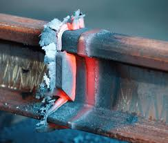

Specializing in High-Pressure Pipeline Welding
IronBond’s core expertise lies in handling high-pressure pipelines, which are crucial for the efficient and safe transport of utilities across vast distances. These pipelines serve as the arteries of modern infrastructure, conveying vital resources to industrial, commercial, and residential users. Understanding the critical nature of these conduits, IronBond employs advanced welding techniques and rigorous processes to ensure that each weld is performed to perfection, thereby safeguarding the integrity of the pipeline against leaks and ruptures.
IronBond Welding stands at the forefront of high-pressure pipeline welding, a specialist provider known for its exceptional craftsmanship in systems that transport essential resources such as water, gas, and oil. With a commitment to safety, quality, and efficiency, IronBond is a leader in the industrial pipeline welding industry, ensuring that utilities meet the highest standards for reliability and functionality.
Adherence to Safety and Quality Standards
Safety is paramount in the high-stakes environment of pipeline welding, especially when dealing with flammable or hazardous materials. IronBond’s adherence to stringent safety and quality protocols exemplifies their commitment to operational excellence. The company follows all industry standards and regulations, such as those set by the American Petroleum Institute (API) and the American Welding Society (AWS), ensuring that each project is aligned with the best practices and safety guidelines. This meticulous attention to detail not only minimizes the risk of accidents but also enhances the longevity and reliability of the pipeline systems.
Reliability and Efficiency in Utility Transport
IronBond’s welding solutions are designed to maximize the reliability and efficiency of utility transport systems. By using state-of-the-art technology and materials, IronBond ensures that pipelines are not only durable but also optimized for performance. This results in fewer disruptions, lower maintenance costs, and improved service delivery for providers and consumers alike. Whether it’s transporting crude oil, natural gas, or potable water, IronBond’s welded pipelines are built to facilitate smooth and uninterrupted flow, meeting the growing demand for energy and resources. IronBond Welding is a trusted partner for numerous sectors relying on robust pipeline systems. Their expertise and proven track record make them a preferred choice for projects that require high precision and reliability. From initial consultation and design to fabrication and final inspections, IronBond provides comprehensive services that cover all aspects of pipeline construction and maintenance. In conclusion, IronBond Welding’s specialization in high-pressure pipeline welding makes them a cornerstone in the infrastructure of utility transport. Their unwavering commitment to safety, quality, and efficiency not only ensures that essential services are delivered without fail but also supports the sustainability and growth of industries dependent on these critical resources. For those seeking a reliable welding partner, IronBond offers the assurance of top-tier performance and enduring results, making them a key player in the industrial pipeline welding sector.